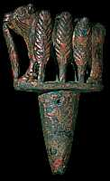
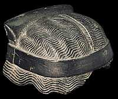
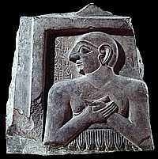
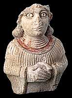

|
The king was not the only one who could leave objects in the temples. Ordinary people could too.
These are the sorts of objects archaeologists have found in temples, left by different people.
| |
| This metal object was buried in the foundations of a temple by governor Gudea. |  |
|  | This stone wig for a statue was dedicated by King Shulgi around 2050 B.C. |
| This plaque was nailed to a temple wall on behalf of governor Enannatum. |  |
|  | This Sumerian figure was left in a temple by a person hoping to be blessed by the gods. |
|
| |